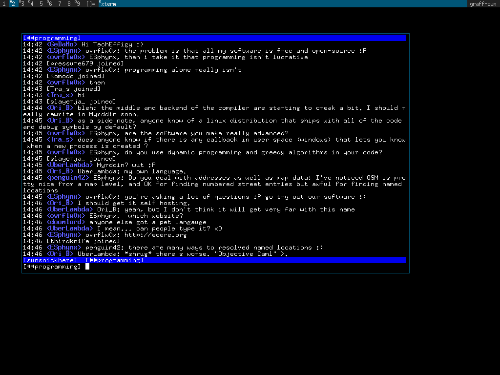
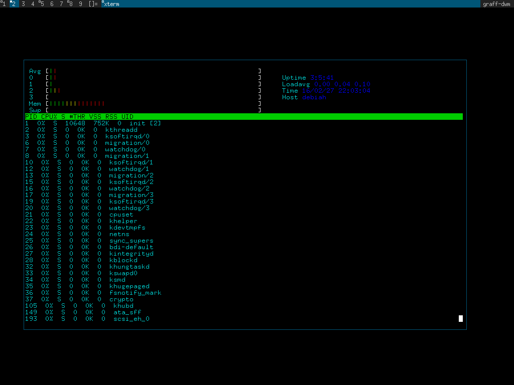

Grafland
DESCRIPTION:
Grafland is a collection of unique; userland tools, cross
compiling toolchains, math libraries, arbitrary precision
math libraries, terminal rendering libraries, standard C
libraries, an irc client, a shell and a cross build system.
It also contains a window manager, editor, system monitor
and other useful tools and shell scripts.
Each subdirectory has a README which documents its usage.
HIER:
bin/
Userland applications written in C (native)
lib/
Standard C library components and helper libraries, (native)
Gshline. An editline/readline like implementation. This
library is used to supply line editing and history to
the graff shell (Gsh) and grafland irc client. The latter
is supplied with a unique ircline() function (native).
math/
Arbitrary precision string and bigint / bignum functions in C.
Transcendental mathematics functions written in C (native).
docs/
Whitepages I have written to document various OS and books
(native).
editor/
A native editor.
wm/
A rewrite of dwm.
gsh/
A native shell.
irc/
A native irc client and library.
shbin/
Userland applications and libraries written in POSIX shell
(native).
toolchain/
A cross compiling toolchain and build system. Similiar to
buildroot but with much simpler code,
-Link grafland components up into the toolchain
for cross compilation and installation.
-Build and maintain outside software.
BUILDING:
make
make install DESTDIR=$(pwd)/myroot
Install a single component of grafland:
cd grafland/cbin
make
make install DESTDIR=/path/to/target
CROSSBUILDING:
Because grafland has its own gcc based cross compiling
toolchain system, it can easily build itself or other
other outside software. Indeed the toolchain/Makefile
has links to build nearly 100 target packages. Grafland
uses these packages internally to test its own toolchain
effectiveness.
The cross toolchain build system located inside of
toolchain/ can be used to create a cross toolchain
and then cross build the rest of the OS:
make toolchain
export `make buildenvars`
make
make install DESTDIR=$(pwd)/myroot
For finer grained control over the cross toolchain
(such as changing architectures or using the tool-
chain to build other OS)) you'll want to change
directories to toolchain/, view the documentation
within toolchain/README and run the build system
from there.
PORTABILITY:
To some extent all of the components of grafland are standalone.
The core functionality (excluding the toolchain) depends on only
the standard C library and a few POSIX extensions to it. This
being the case it should work fine on linux, mac, NetBSD and
FreeBSD.
CONTACT:
CM Graff cm0graff@gmail.com
UPSTREAM:
https://github.com/cmgraff/grafland
IMAGES:




RELEASES:
http://www.csit.parkland.edu/~cgraff1/grafland-0.2d.tar.gz
http://www.csit.parkland.edu/~cgraff1/grafland-0.2e.tar.gz
http://www.csit.parkland.edu/~cgraff1/grafland-0.2f.tar.gz
http://www.csit.parkland.edu/~cgraff1/grafland-0.2g.tar.gz
http://www.csit.parkland.edu/~cgraff1/grafland-0.3b.tar.gz